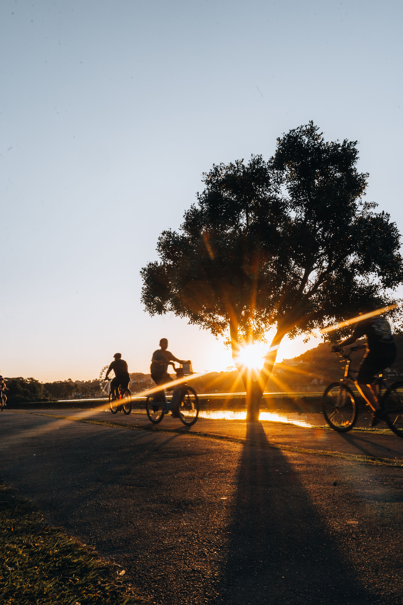
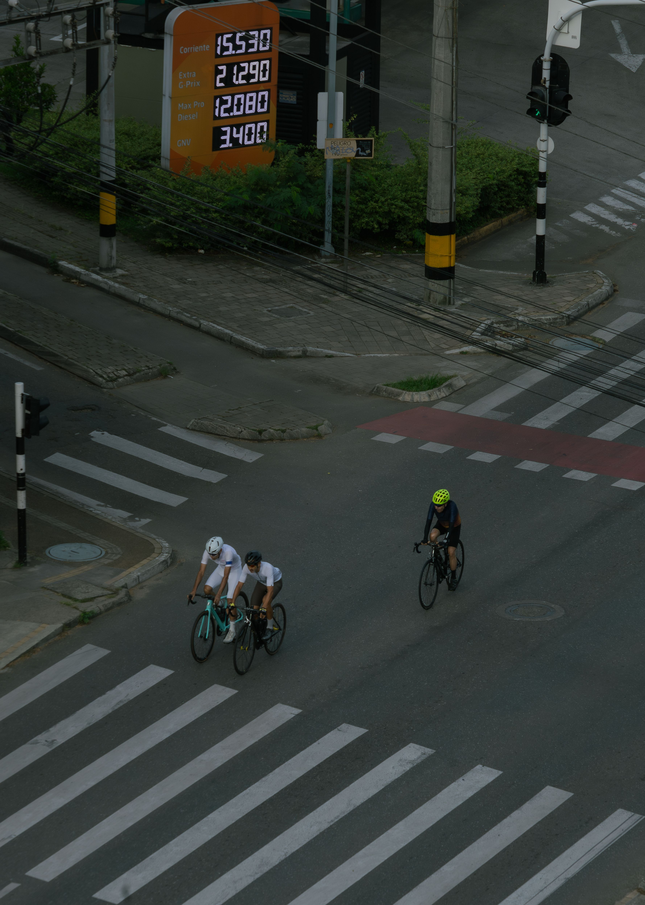
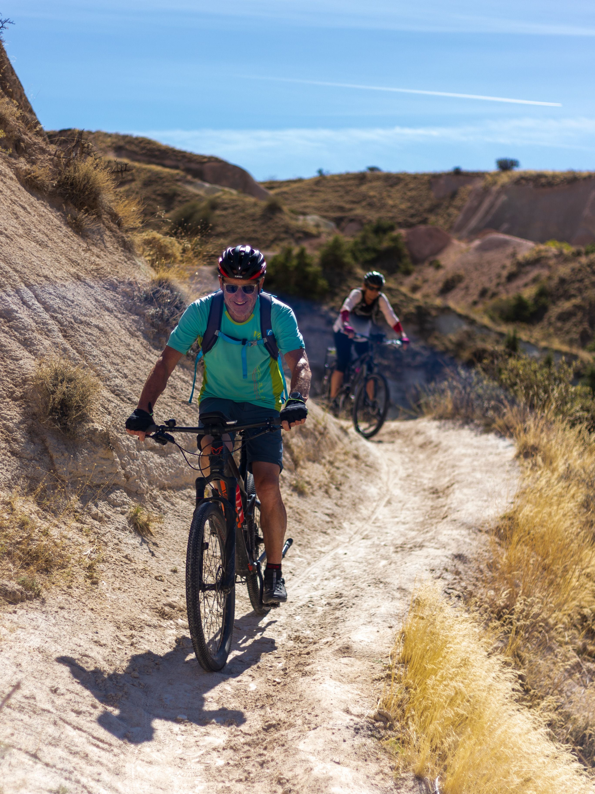

Riding the Iron Curtain Trail
A comprehensive guide to tracing history and crossing border checkpoints along the former Austrian-Slovak border on two wheels.

Routes, travel inspiration, local tips and cycling stories from Bratislava and beyond.

A comprehensive guide to tracing history and crossing border checkpoints along the former Austrian-Slovak border on two wheels.

What it's like to ride through grape-filled hills during autumn harvests and taste wines at historic family-run cellars.
Everything you need to know about riding paths, wind directions, gears, and best sightseeing stops along EuroVelo 6.

A weekend bikepacking itinerary across forest paths, ancient castle ruins, and pitching camp under regional stars.
We are currently writing new stories for this category. Check back soon for routes and insider tips!